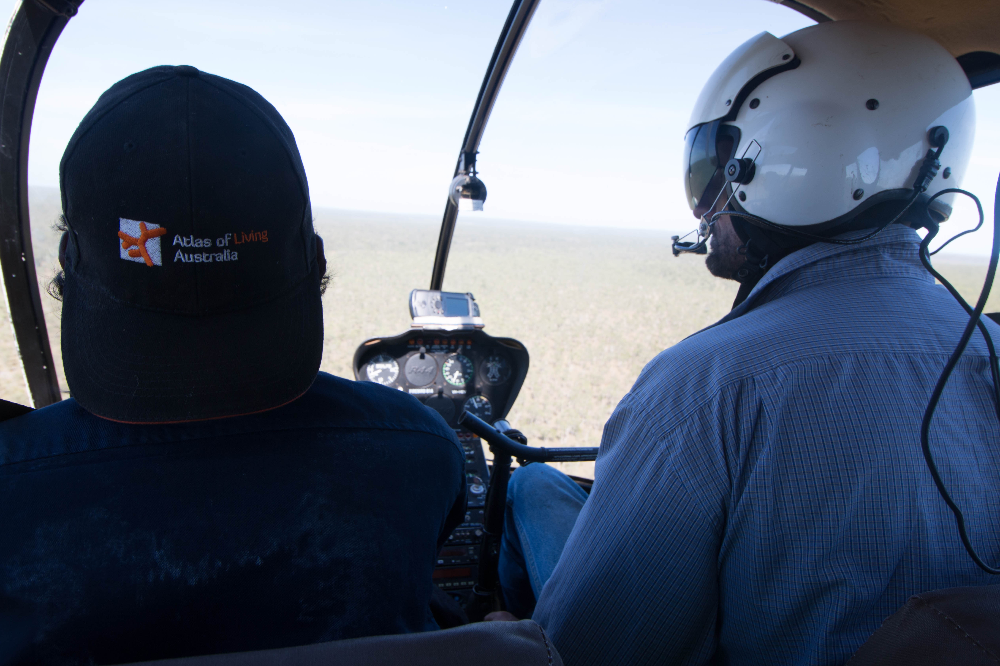
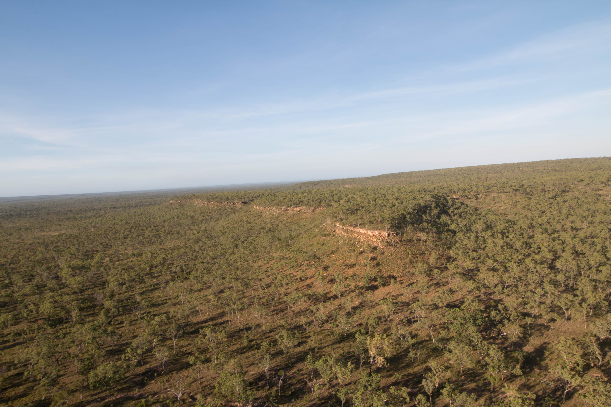
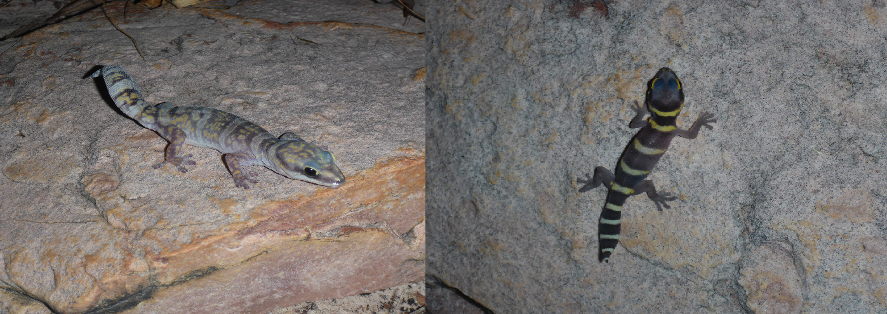

** This post has been written and produced by the Yugul Mangi Rangers of south-east Arnhem Land, with Emilie Ens and Mitchell Scott (Macquarie University, Sydney).
Aboriginal people manage some of Australia’s most remote and difficult to access parts of Australia. Limited access by people can mean that environmental threats such as intense wildfire and invasive species take hold. Thanks to funding and support from the Atlas of Living Australia (ALA), Australian National University (ANU) Centre for Biodiversity Analysis (CBA) and the Foundation and Friend of the Botnaic Gardens (FFBG), in April 2015 the Yugul Mangi Rangers, Mingirringi (Traditional Owners) and Jungayi (Traditional Managers) were able to travel to remote Ngandi Country in the proposed SE Arnhem Land Indigenous Protected Area. Ecologists from Macquarie University in Sydney (Emilie Ens and Mitchell Scott), the Acting Collections Manager at the National Herbarium of New South Wales (Gillian Towler) and Ngukurr Language Centre Linguist (Salome Harris) who have all been working with the Rangers were fortunate enough to join the trip and assist with cross-cultural biodiversity surveys and cultural knowledge recordings.

Kelvin Rogers (Jungayi and Yugul Mangi Ranger) travelling over Ngandi Country with North Australian Helicopters pilot Luke O’Donnell.
FAMILY AND CULTURE
Ngandi Country is some of the most remote Country managed by the Yugul Mangi Rangers and represents a significant part of the proposed SE Arnhem Land Indigenous Protected Area (IPA). Very few Ngandi Traditional Owners have been to this area due to geographical, access and resource limitation issues. Through this project we were able to get enough resources, including hiring a helicopter, to take people out there at the request of Cherry Daniels, Ngandi Traditional Owner and IPA cultural advisor.

Southern section of the Parsons Range in Ngandi Country known as Rinyji
Cherry Daniels thought she may never return to her Country as she is now 70 years old. She had only been there twice in her life – once in 2004 and once when she was in her fifty’s. Her daughter Marjorie had never been there. But an opportunity created by the Rangers, Traditional Owners, Emilie Ens, and Gill Towler with support from the ALA, CBA and FFBG, led to 30 community members, including 4 generations of Ngandi people, making a return to their Country.
Marjorie Daniels said of the trip:
“Well for me I reckon it was really good to go out there…look all the different place, look all the different plants and different animals. That environment is a bit different to where we stay in the community [Ngukurr]. It was cool out there, not hot. It was lovely to sit down under the shady tree and cook…fishing…I just liked looking at that whole place. It reminds me of…well that area it belongs to my husband…that river…it reminds me of my husband. His daddy used to tell him stories about that area long time ago. And I been want him to see that place really badly…so I’ve seen it now and I am happy I’ve been out there with my son [Scott Dingul].
It’s a great experience for kids. For little kids like my little daughter now, my niece [Petria Lingiari] and the two little boys of [my sister] Annette [Matthew and Kelvin Lingiari]. All that mob it’s all been really good for that mob so they can learn. Learn about both ways – blekbala way and munanga [white fella] way.
When we took the kids [out bush on a school trip after this] they couldn’t stop talking about Warrpani [billabong in Ngandi Country]. They told the rest of the kids how Warrpani was like to them. They felt they were home with their grandmother [Cherry]. Their real home. It was sad going away from there for me and mum…and the kids. We couldn’t stop talking about it when we came back down at Ngukurr.
To me it was really good going out. I love travelling out. It was a really great experience to me ‘cause I never been in that area since I was born. Now I’m 49 years of age, nearly 50, that’s the time I went out to see my mum’s area. You know. She hasn’t been taking us there for a long, long time. Only when she was getting old now she asked my brother if she could take some families out you know. And it was ok for her. They let her do that now.”
When visiting Country it is important that the right people give consent and the right people are present. Both Cherry Daniels and Winston Thompson are senior Ngandi Traditional Owners and they directed who came and where we would camp and conduct surveys. The men set up their own camp for a couple nights and did surveys in a different area to the women. Ernest Daniels and Kelvin Rogers are Jungayi for that area (Jungayi are the Traditional land managers, as opposed to owners). Their job is to ensure the Traditional Owners and all visitors are doing the right thing on Country.

Cherry Daniels (Ngandi Traditional Owner) surrounded by two Jungayi, Ernest Daniels and Kelvin Rogers, at the main campsite.

Cherry Daniels and Winston Thompson (Ngandi Traditional Owners) teaching the group about Ngandi Country including sacred sites.

Clarry Rogers (Yugul Mangi Ranger Coordinator) and Winston Thompson (Ngandi Traditional Owner and Yugul Mangi Ranger) describing the different trapping methods and sites to be used in the survey, with (from left to right) Cherry Daniels (Ngandi Traditional Owner), Marjorie Daniels, Mitchell Scott (Macquarie Univeristy), Kelvin Lingiari and Clancy Turner.
DOCUMENTING SPECIES SO WE KNOW WHAT NEEDS TO BE PROTECTED
Remote areas where people don’t often go are at risk from intense wildfires and invasive species including feral cats and cane toads. These threats have caused significant declines in goannas, snakes, quolls and small mammals in this region. Also, remote areas that have not experienced or been allowed access to scientists can often harbour species of plants and animals that haven’t been adequately described by Western science. On this trip, we wanted to find out what animals and plants were out on Ngandi Country. We caught and recorded animals and plants at three survey areas and used CyberTracker to electronically record data.
One remote area of the Parsons Range was crawling with bandayamah (Ngandi for gecko). Whilst spotlighting at night, we found many Marbled Velvet Geckos (Oedura marmorata). As biginini (kriol for children), the gecko has strongly coloured yellow bands. When it grows into an adult, the bands disperse and it becomes light purple. We collected tissue samples (tail tips) from all lizards we caught and their DNA will be sequenced by the CBA. Some plant specimens were also taken to the NSW Herbarium for further identification. We hope that through this collaboration we can work together to describe some new species to science.

Bandayamah (Marbled Velvet Gecko, Oedura marmorata) in adult and juvenile colours.
We collected plant specimens at sites on the Parsons Range and near billabong and creek areas. We pressed the plants and took them back to Ngukurr where we will identify them using Aboriginal language and scientific names and add them to the Yugul Mangi Herbarium. For species we can’t identify, Gill Towler will take them back to the NSW Herbarium for comparison with other known species and then bring that information back. Gill Towler received a scholarship from the Foundation and Friends of the Botanic Gardens to participate in this project.

Collecting plants: (from left to right) Maritza Roberts, Gill Towler, Tonianne Roy, Julie Roy, Pollyanne Ponto, Keisha Thompson and Wendy Munur.

Cross-cultural botany session: Recording names and knowledge of plants from Aboriginal and Western science: (from left to right) Emilie Ens, Salome Harris, Marjorie Daniels, Pollyanne Ponto, Maritza Roberts, Keisha Thompson.
Thanks to the ALA, CBA, FFBG, Northern Land Council, Macquarie University and Ngukurr Language Centre for supporting this culturally and biologically valuable trip. Now that the families have returned to Ngukurr Community, they are keen to do trips out this way more often, to look after this unique Country and its biocultural resources.
This post has been produced by the Yugul Mangi Rangers of south-east Arnhem Land, with Emilie Ens and Mitchell Scott (Macquarie University, Sydney). Get in touch at yugulmangi.rangers2@gmail.com emilie.ens@mq.edu.au mitchell.ll.scott@gmail.com
Read more about their Indigenous Ecological Knowledge projects on the ALA blog:
First ALA records of elusive Leichhardt’s Grasshopper in Arnhem Land
Bringing south-east Arnhem Land stories to south-east Australia mob

{kind=link}
{kind=link}
{kind=link}